操作マニュアル
1 本書について
本書では、建物振動シミュレーションシステム（以下「本システム」という。）の操作手順について記載しています。
2 使い方
2-1 ログイン画面
本システムにアクセスすると、まずログイン画面が表示されます。
Emailアドレスとパスワードを入力し、「ログイン」ボタンを押下すると、メニュー画面が表示されます。
2-2 メニュー画面
広域のシミュレーションを行うか、個別建物のシミュレーションを行うかを選択します。
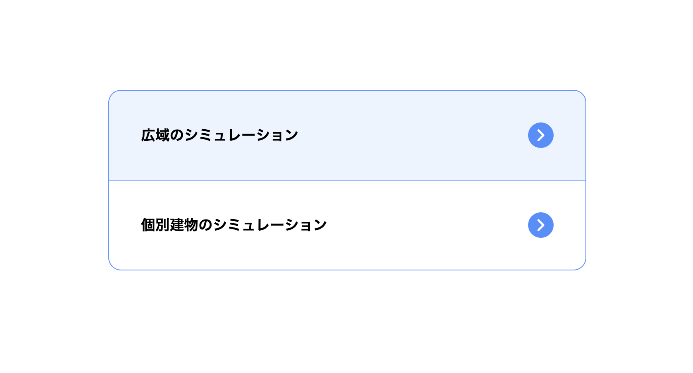
2-2-1 広域のシミュレーションメニュー画面
対象地域メッシュプリセット シミュレーションの対象地域のプリセットを登録する機能です。
地震動データプリセット シミュレーションに使用する地震動データのプリセットを登録する機能です。
シミュレーション予約登録 シミュレーションの予約を登録する機能です。
シミュレーション管理 シミュレーションの管理を行う機能です。
メニューに戻る メニュー画面に戻ります。
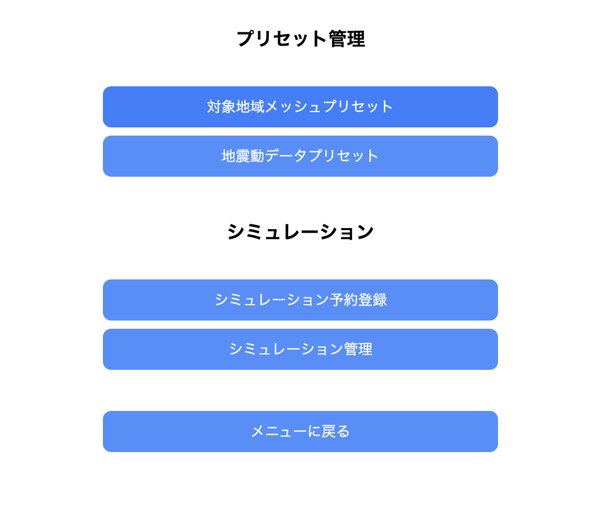
2-2-1-1 地域プリセット一覧
登録されている地域プリセットの一覧が表示されます。
地域プリセットの新規登録 地域プリセットの新規登録画面に遷移します。
地域プリセットの付帯情報の登録 既存の地域プリセットに付帯情報を登録します。
地域プリセットの削除 選択した地域プリセットを削除します。
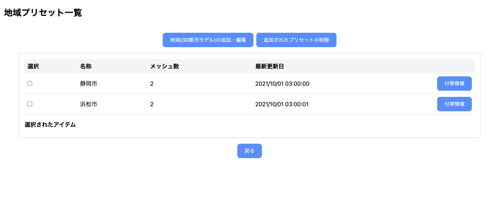
2-2-1-2 地域プリセット新規登録
地域名 地域プリセットの名前を入力します。
地域メッシュ 地域プリセットの対象地域のメッシュを選択します。 地図画面に遷移し、該当地域を選択します。
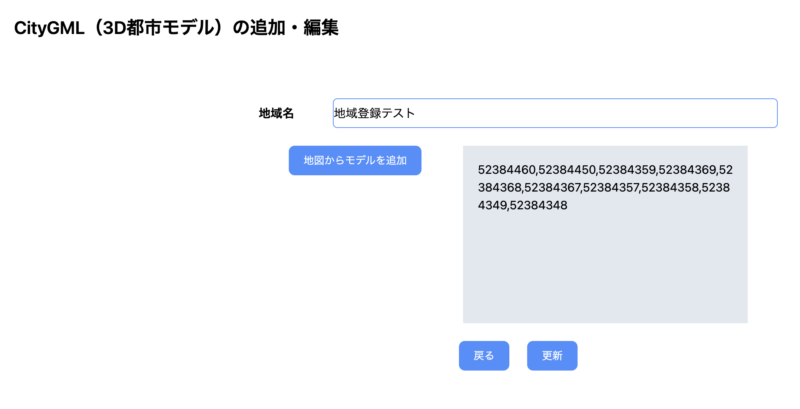
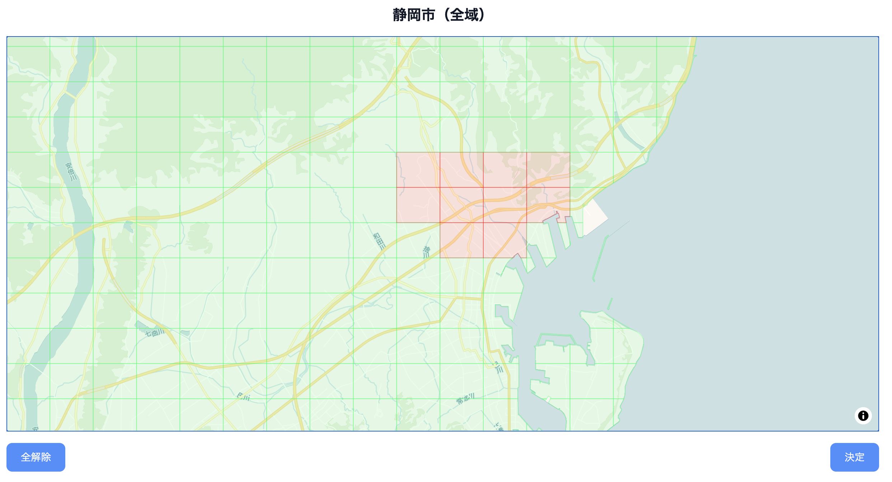
2-2-1-3 シミュレーション予約
地域と地震動データを選択し、シミュレーションの予約を登録します。
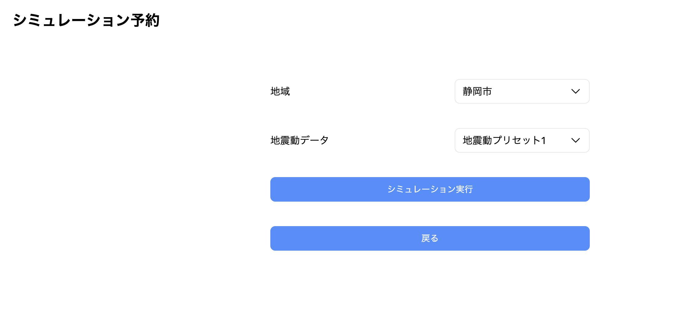
2-2-1-4 シミュレーション管理
登録されているシミュレーションの一覧が表示されます
ステータスの欄に、現在の状況が表示されます
シミュレーションの詳細を確認するには、詳細ボタンを押下します
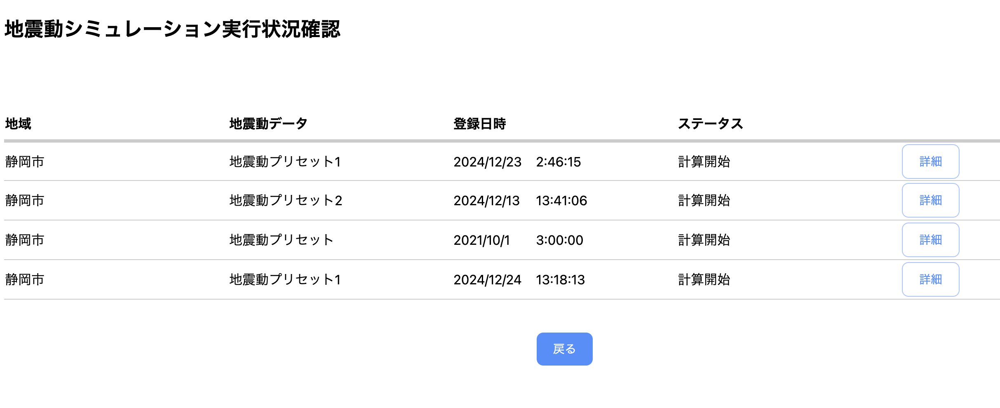
2-2-1-5 シミュレーション予約詳細
シミュレーションの詳細を確認します。
データのダウンロード、およびデータ可視化の結果に遷移することができます。
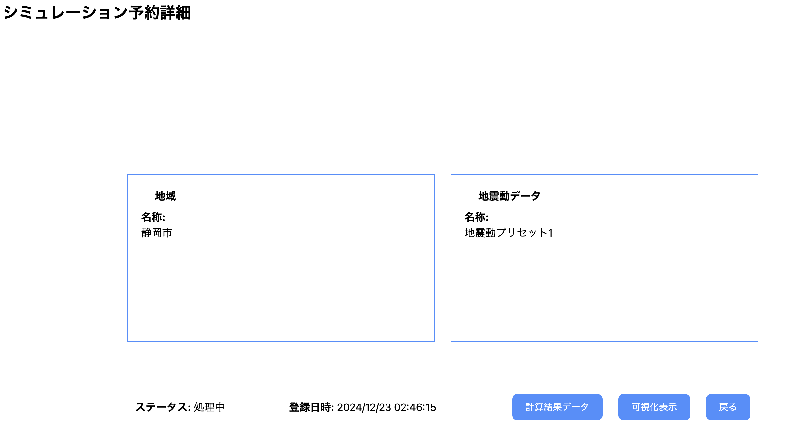
2-2-2 個別建物のシミュレーションメニュー画面
建物データプリセット シミュレーションの対象建物のプリセットを登録する機能です。
解析モデルプリセット シミュレーションに使用する解析モデルデータのプリセットを登録する機能です。
シミュレーション予約登録 シミュレーションの予約を登録する機能です。
シミュレーション管理 シミュレーションの管理を行う機能です。
メニューに戻る メニュー画面に戻ります。
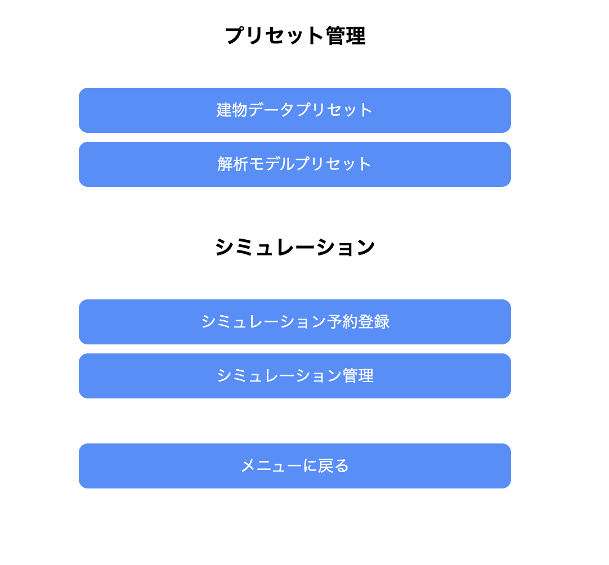
2-2-2-1 建物データプリセット一覧
登録されている建物データプリセットの一覧が表示されます。
建物データプリセットの新規登録 建物データプリセットの新規登録画面に遷移します。
建物データプリセットの付帯情報の登録 既存の建物データプリセットに付帯情報を登録します。
建物データプリセットの削除 選択した建物データプリセットを削除します。
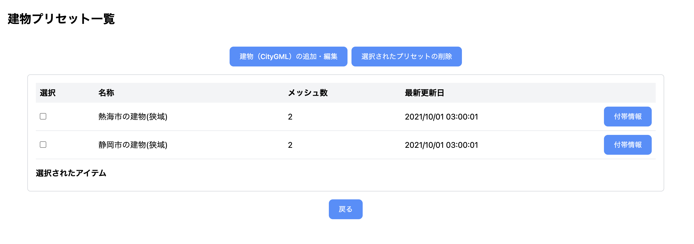
2-2-2-2 建物データプリセット新規登録
建物名 建物データプリセットの名前を入力します。
緯度 建物の緯度を入力します。
経度 建物の経度を入力します。
緯度と経度は、地図画面に遷移し、該当地域を選択できます。
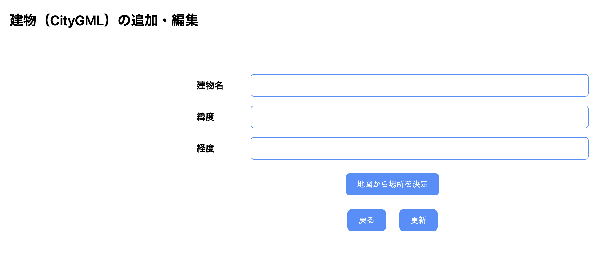
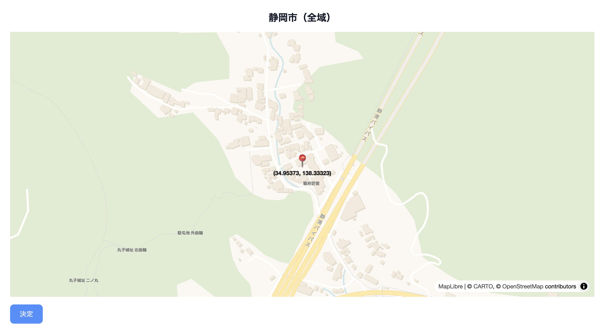
2-2-2-3 シミュレーション予約
建物と解析モデルを選択し、シミュレーションの予約を登録します。
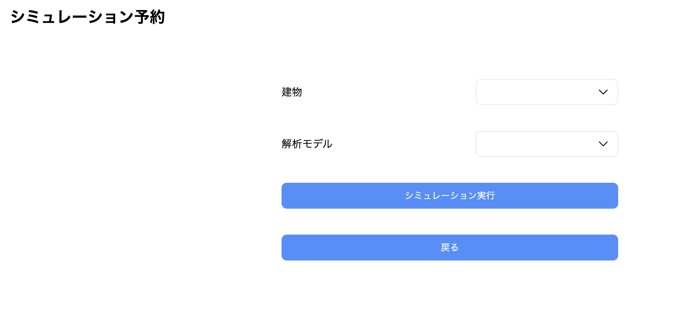
2-2-2-4 シミュレーション管理
登録されているシミュレーションの一覧が表示されます
ステータスの欄に、現在の状況が表示されます
シミュレーションの詳細を確認するには、詳細ボタンを押下します
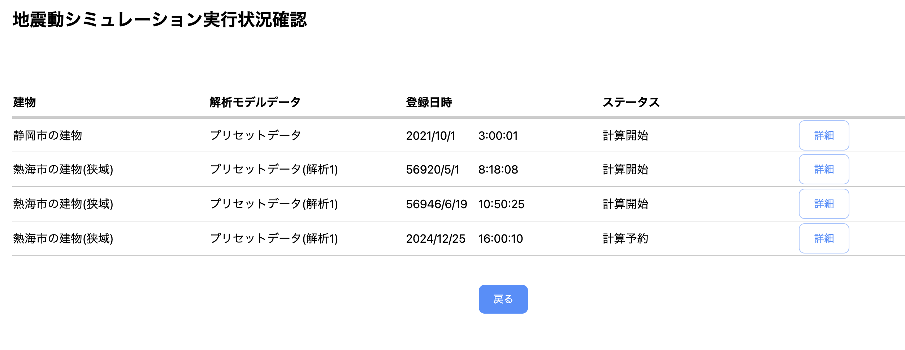
2-2-2-5 シミュレーション予約詳細
シミュレーションの詳細を確認します。
データのダウンロード、およびデータ可視化の結果に遷移することができます。
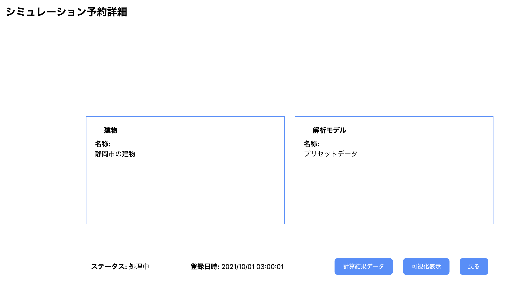
2-3 シミュレーション結果
2-3-1 広域シミュレーション結果
地震動における建物の倒壊危険性が色分けされて表示されます。

2-3-2 時系列データの表示
地震の際、建物がどれだけ揺れるのかを時系列で表示します。
再生コントロールが表示されます。
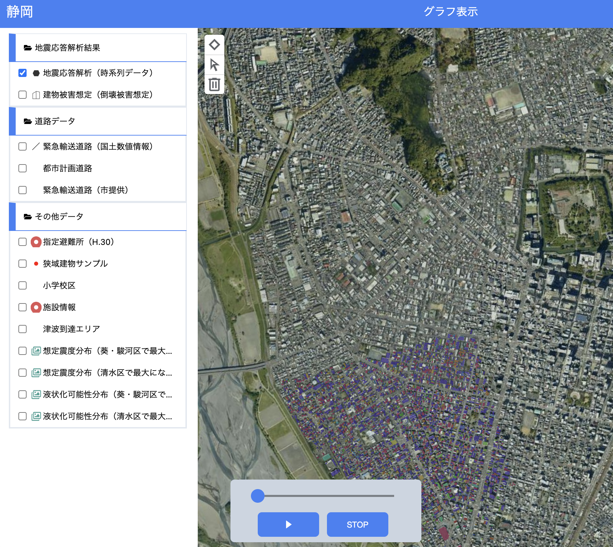
2-3-3 緊急輸送道路のバッファ表示
緊急輸送道路のバッファが表示されます。
バッファの大きさは画面から変更可能です。
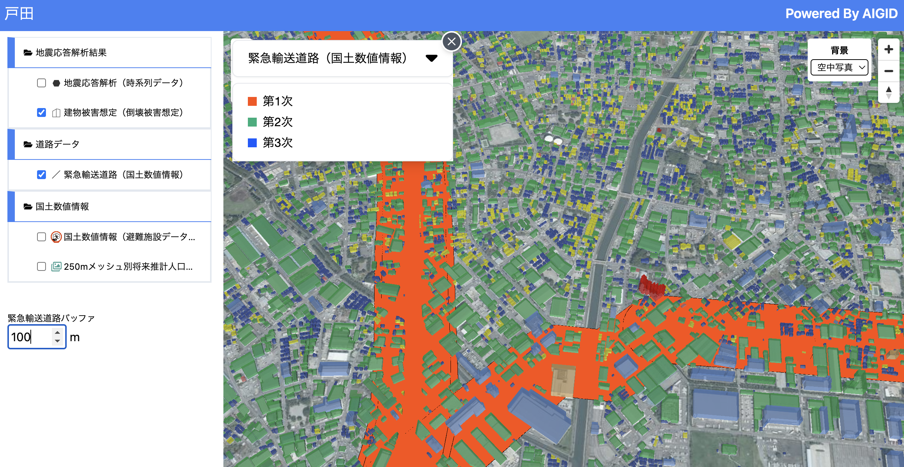
2-3-4 シミュレーション結果比較ダッシュボード
地図上の任意の範囲を選択し、結果をグラフで表示します。
最大2箇所の選択が可能です。
選択する毎に、前のグラフが置き換わって表示されます。

2-3-5 個別建物シミュレーション結果
戸別建物のシミュレーション結果が表示されます。
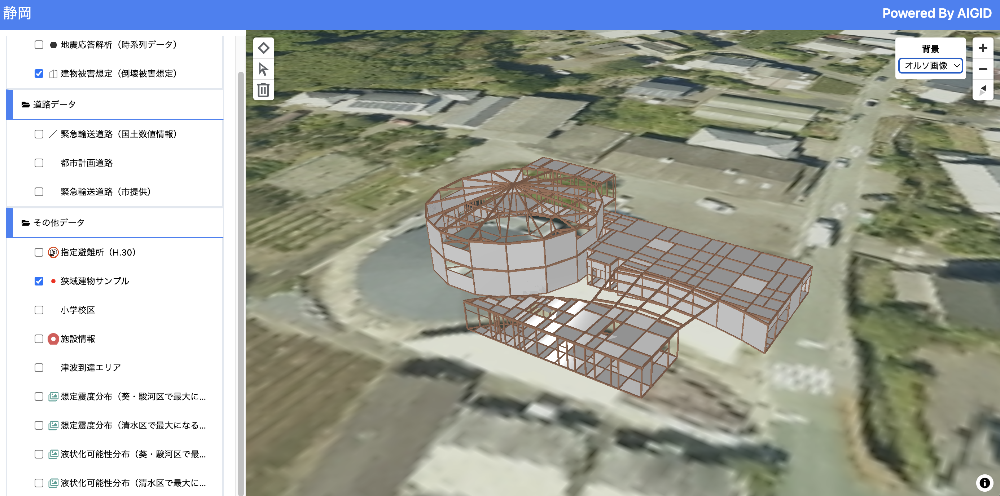